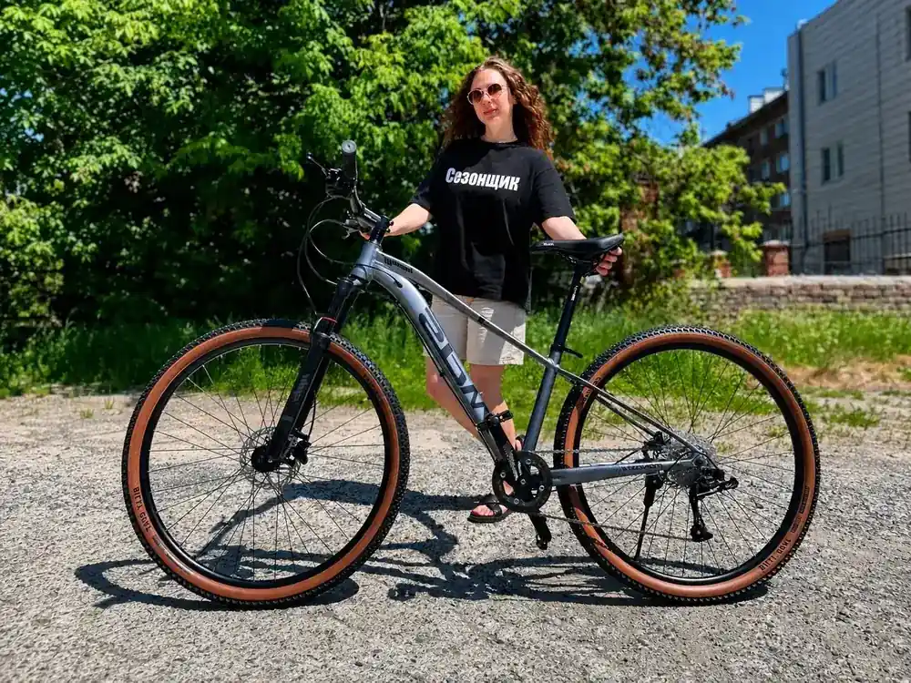
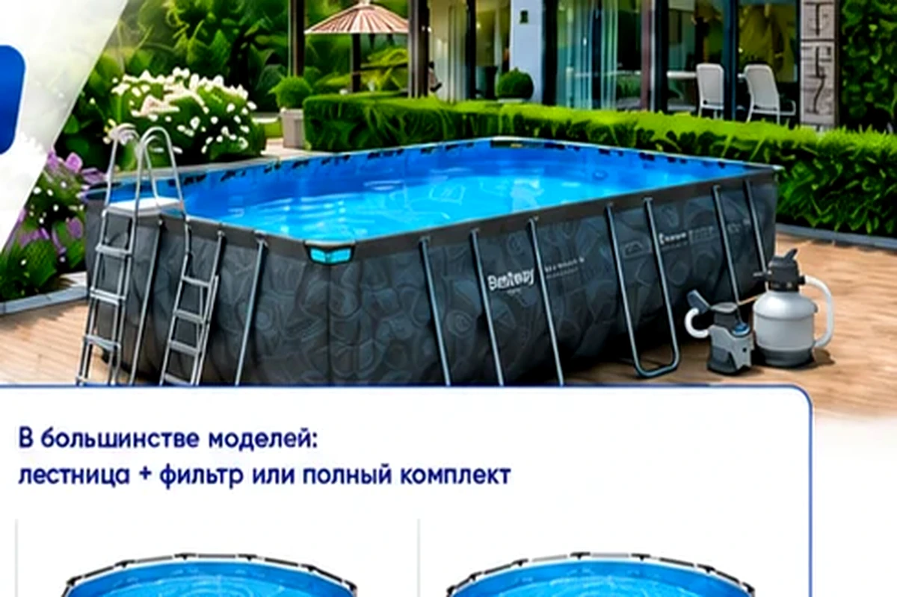
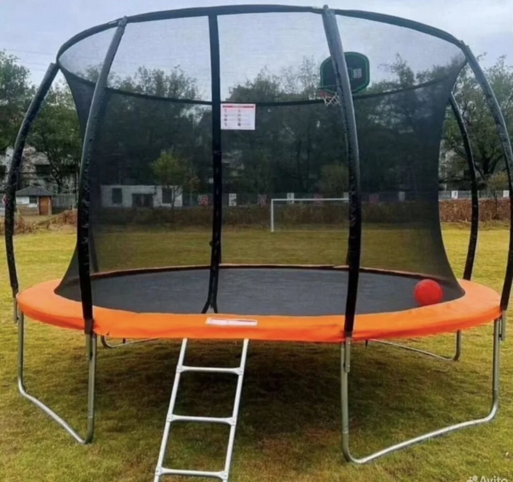
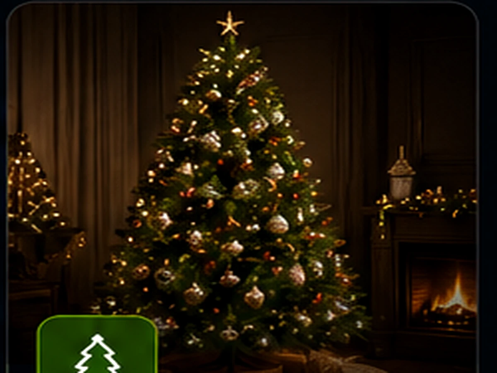

Магазин «Сезонщик»
Хабаровск, ул. Зелёная, 10
Самовывоз велосипедов. Искусственные ёлки — с октября.
Ежедневно 11:00–19:00
Фирменный каталог магазина «Сезонщик»: отдельные разделы, актуальные цены, удобный выбор и быстрый выход на продавца. Искусственные ёлки появятся с октября.
Четыре самостоятельных раздела без лишней путаницы: велосипеды, бассейны, батуты и искусственные ёлки — каждый со своей информацией и быстрыми кнопками связи.

Взрослые, подростковые, детские и BMX. Отдельный каталог с карточками и ценами.
Открыть каталог →
Каркасные бассейны Bestway. Размеры и цены собраны на отдельной странице.
Размеры и цены →
Надёжные батуты с защитной сеткой, размерами, нагрузкой и ценами на отдельной странице.
Размеры и цены →
Премиальные и классические модели. Ассортимент, размеры и цены добавим перед началом сезона.
Узнать первым →Обратите внимание: у категорий разные адреса выдачи.
Хабаровск, ул. Зелёная, 10
Самовывоз велосипедов. Искусственные ёлки — с октября.
Ежедневно 11:00–19:00
Хабаровск, ул. 8 Марта, 14
Самовывоз только по предварительной записи.